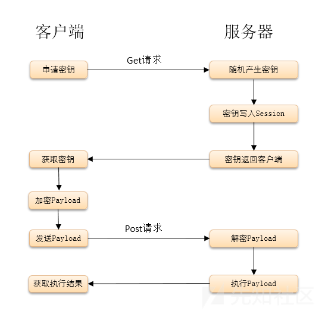

0x00 原理介绍
Webshell是通过服务器开放的端口获取服务器的(某种)权限。对于网站管理员来说，Webshell管理工具是用来管理网站的轻量化工具，也可以用于服务器管理、数据库管理等等。
权限问题
Webshell 的权限是继承的，继承于解析器（Web容器、Web服务器）：apache, IIS, Nginx, Tengine, asp小旋风。Web容器的权限来自于管理员配置。
- Apache: windows默认是 system | administrator
- Nginx, Tengine, IIS: Network Serviece | NT Service
- freehost: 虚拟化主机，小型服务器，权限很小。
0x01 中国菜刀
Webshell管理工具缓存
缓存功能非常重要，在网络连接不上或者菜刀无法连接的情况下，依然能够通过缓存查看网站目录。在做大型项目时，缓存功能非常重要。也可以清空缓存重新连接菜刀。
下载到服务器
下载指定链接文件到目标服务器路径下。当无法通过上传文件，遇到权限问题，文件较大时，建议通过下载方式下载。
下载功能
当下载文件较大时，可以在Webshell管理工具中将文件复制到网站更目录下，通过浏览器访问文件名，从而利用解析器通过浏览器下载。
大文件复制
大文件复制尽量不直接使用Webshell工具，使用cmd命令。使用菜刀中的虚拟终端。
1 | copy readme.txt 1.txt |
乱码处理问题
当上传下载文件发生乱码或者无法解析时，可以通过更改文件编码再次上传或者下载。
Webshell长期驻留
- 修改文件名，例如
default.php - 修改文件修改时间
- 修改文件大小
数据库管理
数据库连接配置，需要知道数据库账号密码，可以在网站目录的配置文件 (config.php, *.config, *.inc.php) 等找到。通过数据库管理，菜刀可以自动填写SQL语句，查看数据库内容。
注：导出数据库数据需要在授权下操作。
CMD虚拟终端
菜刀的虚拟终端为非交互式shell，无法使用交互式命令。
0x02 K8飞刀
一款多功能网络安全渗透测试工具 (漏洞利用、加密解密、高级HackBar、免杀、Webshell、BadUSB等)，功能强大。
K8飞刀中集成了多种后门类型，除了菜刀的一句话后门，还有UA、cookie等。
0x03 开山斧
开山斧是国产开源的一款基于Python的跨平台Webshell管理工具，软件开源，目前支持的语言有PHP,ASP,ASPX。
界面简洁美观，基本功能与菜刀相似。虚拟终端功能与菜刀和cknife不同，执行命令有两个参数且无法删除。
个人使用感觉，界面简洁，可以和菜刀互换使用，但是功能方面没有K8飞刀强大。
优点：
- 基于Python可跨平台
- 代码开源，无后台
- 可对payload进行二次开发，绕过waf
0x04 Cknife
C刀是一款开源跨平台的中国菜刀工具。程序基于Java开发。
由于下载链接失效，这里附上程序的编译方法(JAVA小白也可实现)：Cknife编译
注意，导出工程之前需要先编译运行一遍。
优点：
- Waf绕过功能可自定义高，功能强大
- 有代理功能，可用ss和http代理。
- 可设置请求头。
缺点：
没有下载到服务功能。
0x05 Antsword中国蚁剑[流量加密]
蚁剑核心代码源于中国菜刀，功能比菜刀强大很多。
特点
- 开源
- 跨平台
- 功能模块化设计，有自己的插件市场，可扩展插件
功能
- 可以设置代理
- 可以自定义编码器和解码器
- 可以再特定目录打开cmd终端
- 有wget远程下载功能
- RSA流量加密
0x06 Behinder冰蝎[流量加密]
基于JAVA的动态二进制加密网站管理客户端。

注意：设置链接后，冰蝎会自动访问一次目标，设置之前一定需要设置代理。
openssl_decrypt()报错
遇到连接失败，openssl_decrypt()报错时：
- 未开启openssl，开启方法：
php.ini中开启extension=php_openssl - 已开启openssl但是版本过低
0x07 工具对比
目前这几款工具，在功能上都能实现基本的渗透操作。在操作性上，蚁剑的开源模块化管理的特性非常易用。
对于绕WAF性能，C刀和蚁剑等都是基于菜刀开发，有着相似的流量特征，蚁剑进行一定的流量加密，然而如果不对payload编码做更改，也容易被WAF识别。冰蝎是一种新型的木马连接工具，利用动态二进制加密的方法建立连接，只要在上传冰蝎码时和密匙协商建立连接的时候流量分析设备不能够检测出来，那么连接成功建立之后，waf，ids，ips就会好难再检测到出来。所以，冰蝎绝对是目前渗透测试，红蓝对抗中红方的一大利器。
后续在熟练使用Webshell工具后，也可以借鉴上述Webshell工具的设计思路编写自己的工具。